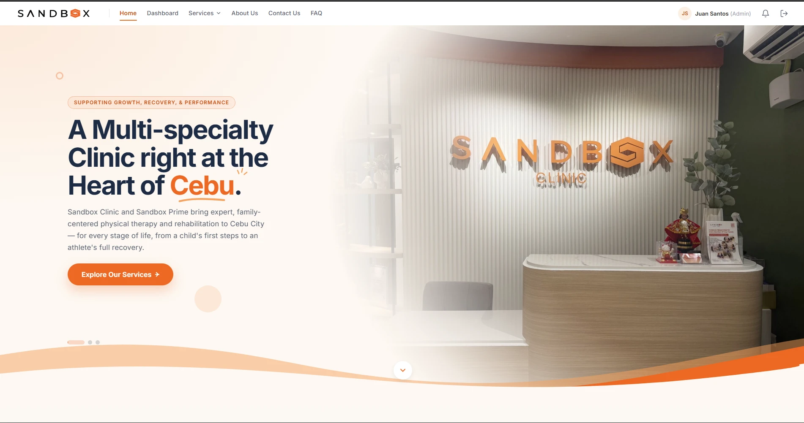

Web Application · 2026 — Present
Sandbox Clinic
Sandbox Clinic, Cebu City · Sole developer
- The Project
- A live, web-based clinic management system covering patient records, appointments and intake forms — used daily by clinic staff and patients.
- The Challenge
- Six different user types — Admin, Manager, Front Desk, Therapist, Doctor and Patient — needed one system, while sensitive patient information had to stay restricted by role.
- My Contribution
- Built and maintain the whole application: role-based access, activity logs, account lockout after repeated failed logins, auto-logout after 20 minutes of inactivity, plus production and staging servers, automatic deployments and cloud file storage.
- The Result
- The system is live and in daily use by the clinic's staff and patients.